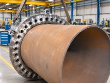

Subsea tooling services
Design, manufacture, sale and rental of purpose-built ROV and diver tooling. Not every problem is best solved by conventional methods. Purpose-built tools reduce operational time, improve safety and deliver cost savings without compromising quality or performance.
We design, engineer, fabricate and test in-house, drawing on the experience and knowledge of our engineers and technicians to ensure every step of the design and development process supports smooth, safe offshore operations, whether by customising existing tooling or developing completely new concepts and innovative tools.
We have successfully developed and delivered a wide range of custom-engineered subsea tools for projects of varying scale and complexity. These solutions have reduced project costs, shortened offshore operations and delivered measurable value, often exceeding client expectations.
What our subsea tooling services cover
Bespoke tool design and engineering
Custom subsea tools designed around your task, whether by adapting existing tooling or creating a completely new concept.
Discuss a toolIn-house fabrication and testing
Our engineers and technicians design, fabricate and test tools in-house to support smooth, safe offshore operations.
Ask about thisROV and diver tooling
Tools deployed by ROV or from the surface and powered by ROV hydraulics, or used alongside divers, to reduce manual handling and diver intervention.
See diving operationsPipeline repair and decommissioning tooling
Cutting, coating removal and bolting tools for pipeline repair, tie-in and decommissioning work, plus hydraulic dredge pumps.
See our servicesWorldwide projects
Headquartered in Singapore with operations in the United Kingdom, we support Oil & Gas, subsea telecom and renewable energy projects worldwide.
See our projectsFeatured tools

Flange bolt speed loader
Large pipeline flange bolts are heavy, and divers handle them manually, a slow, labour-intensive task. They can weigh up to 70 kg each, and a 48-inch flange may need 44, meaning a diver could handle up to three tonnes of bolts. The speed loader lets the deck crew preload the bolts into a template topside. The loaded tool is deployed to the worksite, installed around the pipe next to the flange pair and hydraulically pulled into place, inserting all bolts automatically. The result is less diver fatigue, less manual handling of heavy, sharp bolts, and higher productivity.

Hydraulic diamond wire cutter
A cold-cutting system for pipelines, risers, conductors, multi-string conductors, jackets and caissons, which can be deployed from the surface or by ROV and is powered by the ROV’s hydraulics. It cuts through most protective coatings, has a fine metering valve to optimise efficiency, and is built from marine-grade aluminium alloy and stainless steel for low weight and high corrosion resistance. Hot cutting is slow, manual and high risk, and thermal cutting cannot be used where oil or gas may be present. The diamond wire cutter allows safe cutting with minimal diver intervention.

Weight coat removal tool
An ROV-operated tool that clamps around the pipeline and strips the concrete weight coating, exposing clean steel pipe ready for cutting, repair or tie-in. It is deployed and run by ROV and powered by the ROV’s hydraulics, so no divers are needed at the worksite. Removing weight coat by hand with breakers and chisels is slow, tiring and hazardous. The tool does the work in a controlled, repeatable way, cutting intervention time and the risk of damaging the pipe or its corrosion coating.

Hydraulic dredge pump
A lightweight, efficient pump for moving large volumes of liquid carrying up to 25% solids by volume, with an abrasion-resistant urethane housing that is resistant to petrochemical solvents.
Need a tool built for your job?
If a task is slow, costly or hazardous with conventional methods, tell us about it and we will assess whether a purpose-built solution makes sense. Tools are available for sale or rental.